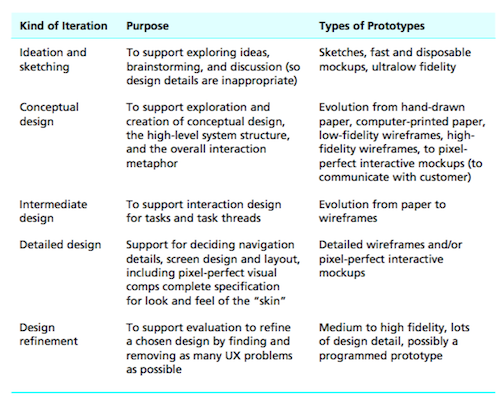

FEBRUARY 24 2016
CH 11 PRESENTATION
In this chapter, the idea of prototyping and why it is important in the design process is explained. Prototyping is a representation of a design. This helps the designers see how users interact with their product. It allows them to evaluate something before committing to any resources needed to build the product. Additionally, prototypes can be used to help sell products to management or a company.This chapter talks about the components to prototypes, specifically the depth and level of fidelity. In terms of depth, there are horizontal prototypes and vertical prototypes. Horizontal prototypes contain the broad overview of functionality in the design, such as conveying the overall product. Examples of this include how the screens or windows are displayed. Vertical prototypes are more depth in functionality. They show the overall flow and interaction that a user experiences when using the product. For the levels of fidelity, there is low-fidelity prototypes, medium-fidelity prototypes, and high-fidelity prototypes. Low-fidelity prototypes are created typically when the details of the design have not been decided. An example of this would be paper prototypes. It is better to start with this basic level rather than spending a lot of time designing something that looks really pretty but isn’t effective. Medium-fidelity prototypes are the in between stage. They can contain components of the design process, like wireframes, that should both low and high level. High-fidelity prototypes are a much more detailed representation, that also includes the interactive design. This is the highest tier in which the prototype is iterated. Lastly, one thing mentioned in the chapter that I found very important was not to fall in love with a prototype. Since it is an iterative process, the prototype will have lots of changes.